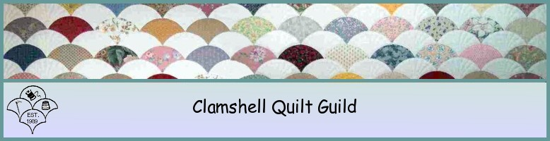

|  |
|
History e-mail us: ClamshellQuiltGuild.org |
About Clamshell Quilt GuildHistoryThe Clamshell Quilt Guild was founded by a small group of women who were taking quilt lessons together at a local sewing machine store. As they sat over their sewing machines learning new quilt patterns, they talked about starting a new guild. There were other guilds in the area; however, several of the women felt a guild was needed in the New London, Waterford and East Lyme area. Subsequent to many hours of planning and pre-organization the first meeting of the Clamshell Quilt Guild was held on September 27, 1989. This first meeting attracted 75 interested quilters, a far greater number than anticipated. The membership has enjoyed continued growth in numbers with each passing year. Regionally, our nearly 200 members encompass northern and southeastern Connecticut and southern Rhode Island. The name Clamshell was selected to reflect the rich nautical history of an area graced with Long Island Sound’s miles of coastline. The befitting ‘Clamshell’ quilt pattern inspired the guild’s logo. Since the inception of the Guild, the primary focus has been to promote and preserve the art of quilting. Clamshell does this through its many and varied activities including conducting workshops, inviting award winning guest speakers to address our guild, organizing in-house demonstrations of the latest tools and techniques, and creating opportunities for its members to gather together several times a month to quilt together. In its effort to give back to the community the Guild has evolved into a non-profit, charitable organization, supporting many other local not-for-profits. Therefore, volunteerism is highly regarded and promoted within our membership. Membership BenefitsAnnual dues, payable in September, entitle members to the following:
Click here for the New Member's Manual. Block of the MonthNew Block of the Month photos and directions are posted on the website as they become available, starting with the month of October. These block directions can be accessed on the Guild website by clicking on the block of the month page. Each month members who choose to participate bring that month's completed block to the Guild meeting and put their name in for the drawing. All of the submitted blocks are displayed and during the meeting a name is drawn. The fortunate winner will receive the submitted blocks to use on a project of their choosing. Ways and MeansWays and Means is a self sustaining committee that runs a raffle and a door prize at each meeting. The money from the raffle pays for the door prize. If there is any money left over, it goes into the general fund. WelcomingThe Clamshell Quilt Guild is made up of many talented men and women who enthusiastically welcome all new members. Our Welcoming Committee insures all new members a very friendly and warm introduction to guild activities and traditions. Our goal is to create a comfortable environment in which you will immediately feel at ease and an integral part of an organization that is dedicated to the art of quilting. It is our sincere hope that all new members will join in, have fun, learn new and different techniques, meet people with a common interest and make a friend. All are welcomed, from beginner to expert, as our guild provides members with programs and information appropriate to all skill levels. Monthly Meeting FormatOur evening begins with a social hour from 6:00-6:30PM, allowing members to socialize as well as visit the various committee tables such as Current Events, Program Information, Charity, Ways and Means, or Block of the Month. The meeting starts with a welcome to new members, followed by a planned program or the guest speaker. The business part of the meeting consists primarily of committee reports and announcements. A short break in the middle of the meeting allows members to stretch their legs, visit the committee tables, purchase raffle tickets, sign up for workshops, visit the free table, or buy raffle tickets. This is followed by drawings for the door prize, the Ways and Means raffle, and Block of the Month. The meeting concludes on a high note with an opportunity for members to share their recent projects during Show and Tell. Should you choose to visit our Guild please check in at our Membership Desk upon arrival. Guests are greeted here by representatives of the Welcoming Committee who will introduce you to the various aspects of our meeting and the different committees set up around the room. A small guest fee may apply in the event that the Guild is hosting a speaker; however, should you join that evening this fee would be waived. Please see our Membership Chair for a membership form or click here to print a form. Charity ProjectsClamshell Quilt Guild gives to many charities either by contributing quilts made by members from donated fabric, by giving needed items to local non-profits, or by Guild financial donations. In the past two years significant monetary gifts were made to the New England Quilt Museum, the Women's Center of Southeastern CT, now Safe Futures), and Lawrence & Memorial Hospital's "Look Good Feel Better" program. Through the Charity Quilt Committee, members made over 200 baby quilts per year for the Neo-Natal Intensive Care Unit at L&M, quilts for youth at the Waterford Country School, and bed size quilts for the New London HHC Veteran's Home in New London. Items are collected at every meeting for the Safe Futures (formerly Women's Center of SECT) as well as pillowcases and utility bags that are made by members and donated to the center. CommitteesWorking on a committee is the best way to meet the members and to fully enjoy your membership in the Guild. The Guild committees can always use another helper.
|